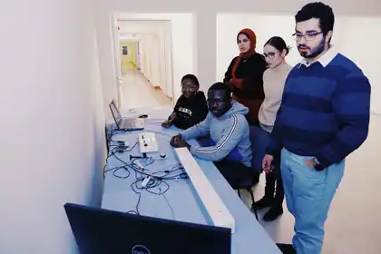
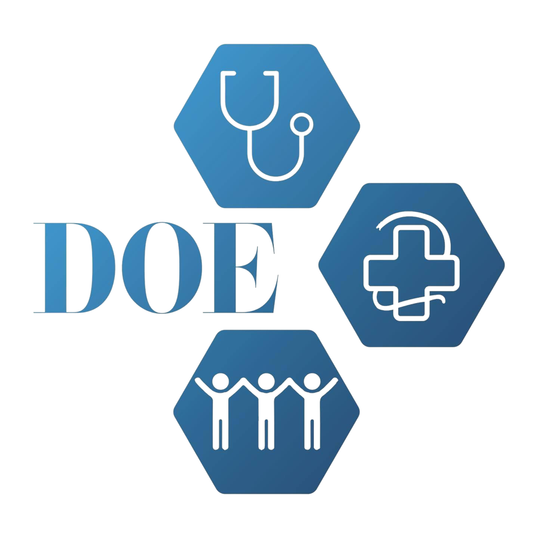

Clinical medicine,
translated through evidence.
Research.
Selected projects.
Publications.
Papers, abstracts and presentations.
Clinical.
International placements, electives and simulation.
Leadership.
Student leadership, teaching and practical medical education.
Lub Dub Club.
Founder-led cardiology education through simulation.

DOE & IFMSA.
Leadership, outreach and exchange.

Teaching.
Research methods and pathology.
Highlights.
Selected awards, competitions and academic milestones.
MedCup 2024.
Second place in Brussels.
Awards.
Selected academic and scientific recognition.
Credentials.
Certificates, supporting evidence and recommendation letters.
Selected certificates and supporting documents.
Documents are shown in redacted form for privacy. Original unredacted copies can be made available on reasonable request.
Letters of recommendation.
About.
Graduated from the six-year English Medicine programme at the University of Debrecen in 2026.
Interested in cardiovascular medicine, clinical research, imaging, and translational science.